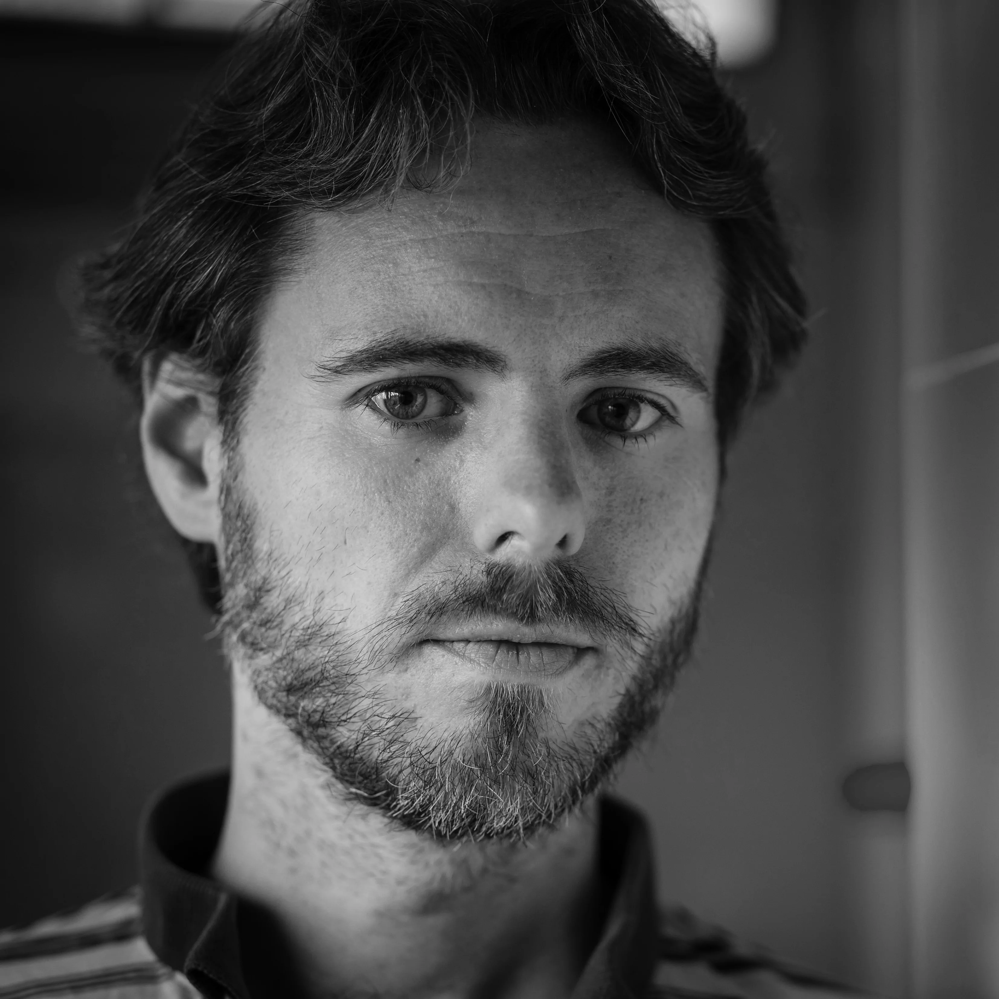

I was born in a small humble family in a big humble city (Dos hermanas). I'd like to say that my passion for photography began when I was eight years old and my parents bought me a cheap camera, but actually, I took some photographs and never asked for new film. I developed a late interest in photography: I could not buy a digital camera until the age of 28, a cheap point and shoot, and a proper manual DSLR until 30. I was more interested in making photographs than in photography itself, and mainly took pics of my travels. In 2018, after a trip to Georgia, I achived a photo essay of the country. From then on, the trips turned into excuses to photograph, and later in projects: I became a travel photographer. I also do street, family portraits and events.
I make a living teaching music composition (I studied Piano and Composition in a Conservatory in Seville). I also write fiction (two published novels in spanish) and review books weekly in Serifa, a YouTube channel.
Contact: claudiomuriel@gmail.com